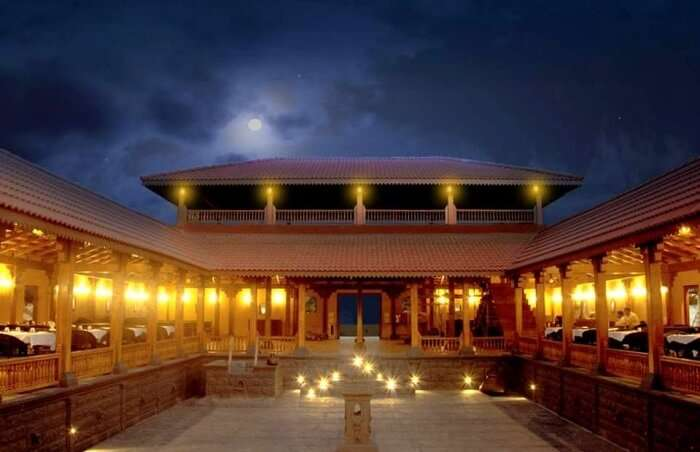
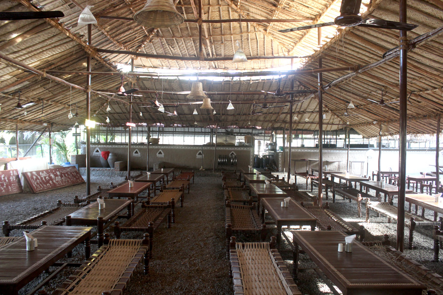
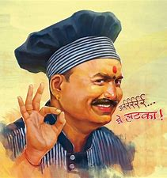
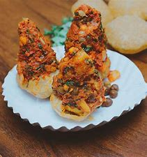
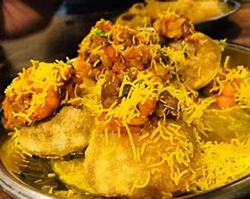
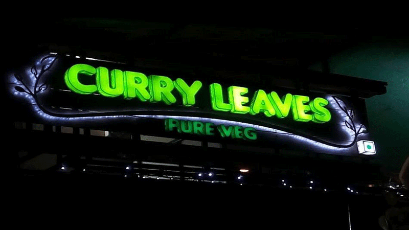
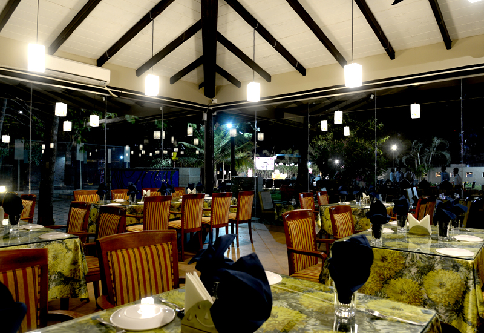

Sadhana Chulivarchi Misal


Sadhana Restaurant is one of the best veg restaurants in Nashik. Ideal for breakfast, this place will attract you for its calm and beautiful interiors while the outdoor seating is fascinating too. Offering experiences like that of horse riding along with a playing area for children, it is a must for all the foodies to try the delicious misal-pav.
Shaukin Chat Bhandar



Every city have its own Chatwallas, Pune have kalyani bhel,Mumbai have their chaupati , and Nashik with no exceptions Have Shaukin Bhel. A little street side stall located near Nehru Garden,Shalimar , Shaukin Bhel was started by two brothers Mahendra and Jitendra Dharnraj in 1999.At the very beginning they started out with Pani Puri and Bhel Puri the usual chat preparations as both of them was completely new to business ,but during their course of experimentation with these two dishes they finally ended up with a entirely unique combination of spices and chanteys which is currently the USP of their business.Shaukin is not just another chat stall you can find on every street it’s more than that and you can get this experience once you’ve been their ,we experience this several time ,Shaukin is definitely place for fulfilling your chat cravings though their taste slightly tilts to Marathi Palate completely unique and irresistible .And at the end If u think u can handle spicy food..think again before going to Shaukin Bhel.
Curry Leaves


Vikram Ugale started this restaurant after researching about the dish. The hotel tried various recipes for about three months and took feedback from our regular customers before finalizing on one recipe which is a blend of black and red curry. Within eight months the missal has become popular among the city’s youngsters who frequent this place every day. The specialty of this misal is, it is a unique mixture of sprouts served with vermicelli, coriander and chopped onion-tomato salad. A special south-Indian papad is also served with the dish here.